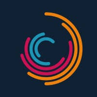
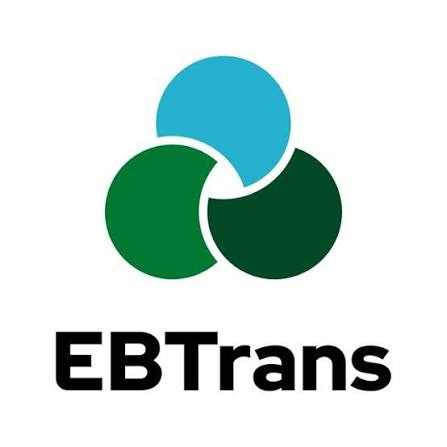
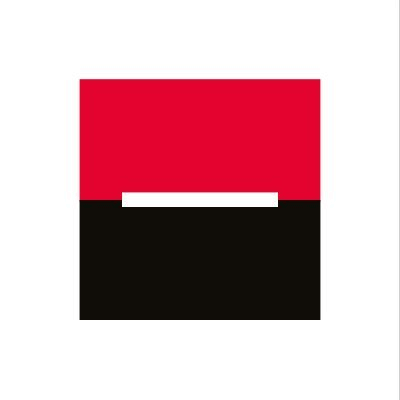
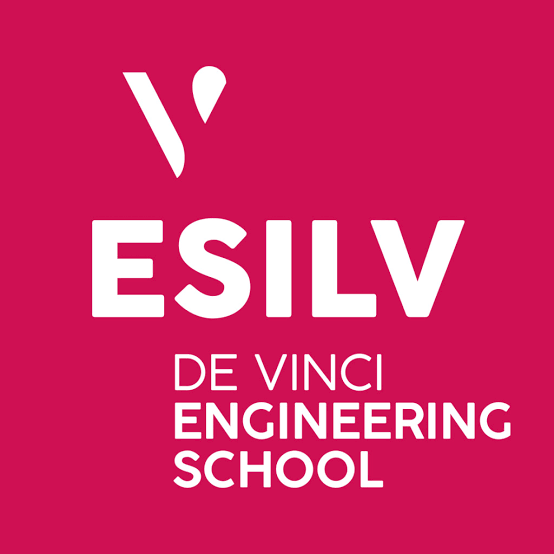

KeyStone-Ledger
Solution SaaS automatisee pour l'audit et la certification comptable, assurant la validation approfondie et le traitement certifie des donnees en moins de deux minutes.

Ingenieur Data & GenIA • Developpeur Full-Stack SaaS
Etudiant ingenieur a l'ESILV (Majeure Data & IA, specialisation GenIA) et a l'Universite Hanyang (Seoul). Specialise dans la conception d'architectures logicielles SaaS, l'integration de modeles LLM / agents IA autonomes et l'ingenierie de donnees.
Actuellement en cursus d'ingenieur a l'ESILV au sein de la Majeure Data & IA (specialisation GenIA - Intelligence Artificielle Generative), mon parcours combine une solide formation scientifique a une immersion internationale avec un semestre d'echange academique a l'Universite Hanyang a Seoul.
Mon approche technique allie la rigueur du developpement (Python, C++, SQL, React/TypeScript) aux architectures logicielles modernes : conception d'agents IA autonomes, pipelines d'automatisation des flux (n8n), conteneurisation Docker et serveurs Linux.
Mes interventions en entreprise (EBTrans, DeVinci Junior, Societe Generale CIB) et le developpement de plateformes SaaS (KeyStone-Ledger, Finly) nourrissent une vision axee sur la fiabilite, la securite et l'impact metier.
Missions en ingenierie de donnees, automatisation IA et finance de marche.

Mission d'investigation numerique et d'enrichissement de donnees (Account-Based Marketing) pour le lancement d'une offre B2B haut de gamme.

Mission au sein de l'equipe AMOA dediee a la fiabilisation et l'industrialisation des donnees operationnelles.

Immersion au sein d'un desk de trading de marche sur les produits financiers structures.
Projets d'ingenierie logicielle, plateformes SaaS et modeles d'intelligence artificielle.
Solution SaaS automatisee pour l'audit et la certification comptable, assurant la validation approfondie et le traitement certifie des donnees en moins de deux minutes.
Application web progressive auto-hebergee de gestion financiere et de patrimoine avec synchronisation bancaire automatique, budget par enveloppes et calcul du net worth en temps reel.
Backend haute performance FastAPI et CLI interactive exploitant le protocole Chrome DevTools (CDP) pour interagir avec Google Gemini Web.
Pipeline de donnees evenementiel et moteur de calcul predictif pour le suivi academique des notes a l'ESILV.
Modelisation Machine Learning pour la prediction des issues de matchs de Ligue 1 et backtesting algorithmique face aux marches des cotes sportives.
Application de modeles d'intelligence artificielle et d'analyse d'images pour ameliorer l'efficacite des reponses aux marees noires.

Cursus d'excellence : intelligence artificielle generative, data science, machine learning, vision par ordinateur, ingenierie logicielle et finance quantitative.
Immersion academique internationale au sein d'une universite leader en ingenierie en Asie.
Baccalaureat general au Lycee Saint Joseph du Loquidy (Nantes, 2019-2023). Scolarite au Lycee Francais de Bruxelles (2017-2020) et au Lycee Francais International de Tokyo (2014-2017).
Disponible pour echanges techniques et opportunites de stage en GenIA, Data Science ou Full-Stack SaaS.